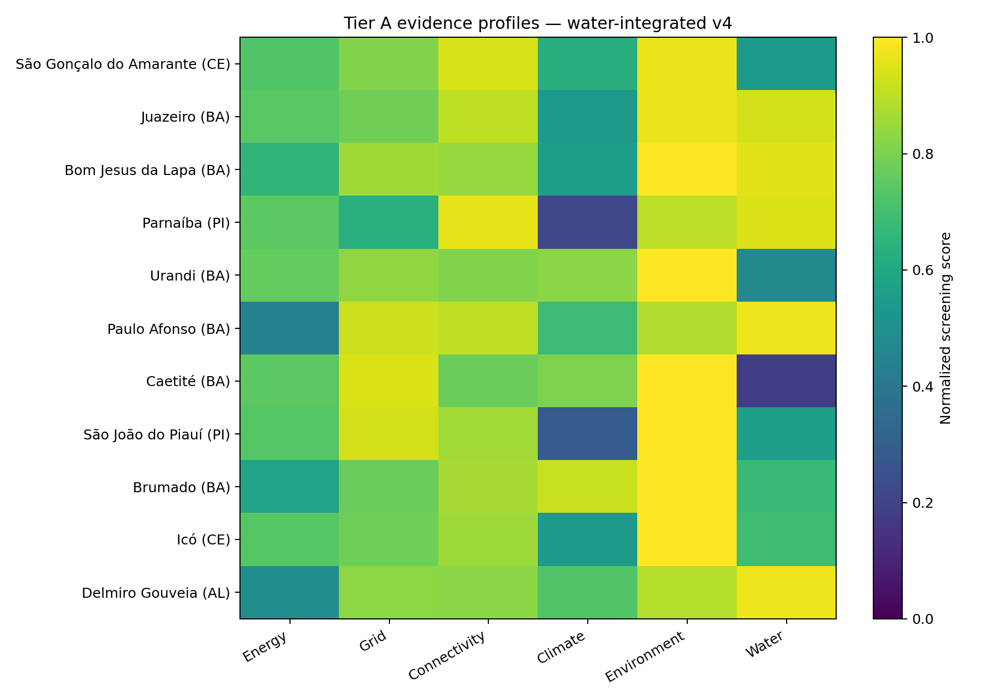
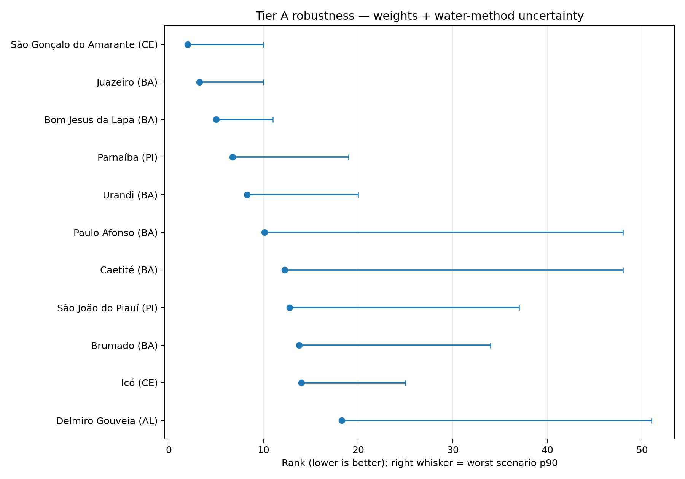
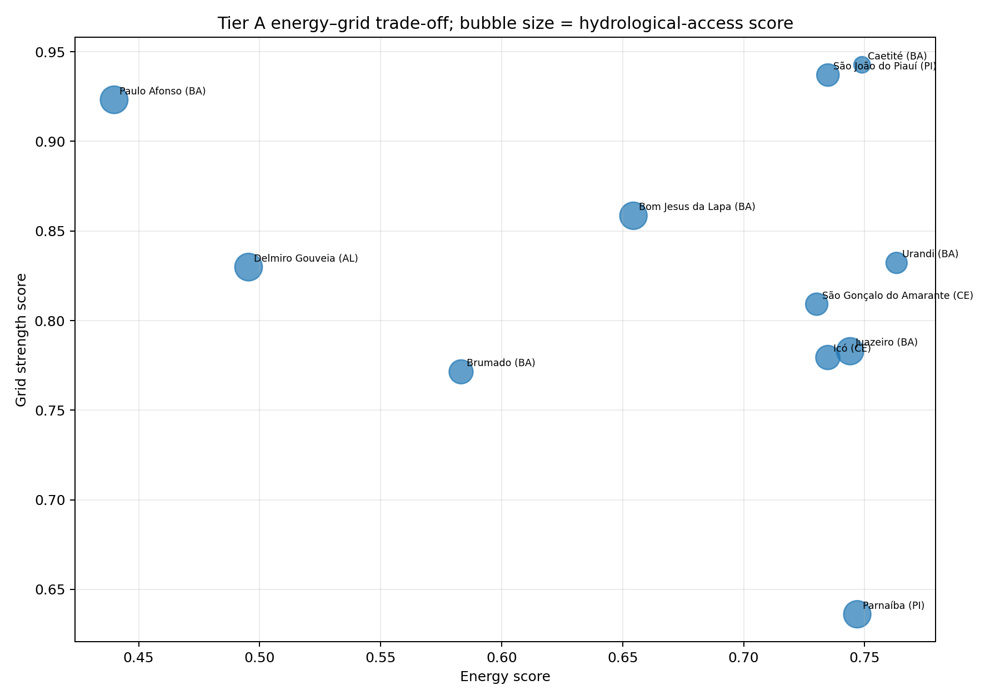

Project 05 · Infrastructure × Energy × Water × Connectivity
From 1,794 municipalities to five places worth deeper diligence.
A reproducible public-data screening system for green data-centre development in Northeast Brazil. It keeps the evidence detailed, but separates where to investigate next from claims that require utility, water, fibre and parcel-level verification.
PUBLIC-DATA SCREENING COMPLETE · EXTERNAL GATES PENDING
Decision funnelPublic evidence → external diligence
1,794
MunicipalitiesFull Northeast Brazil screen
190
Scenario contendersTop 100 in at least one scenario
11
Tier-A robustJoint uncertainty + Pareto validation
5
Diligence prioritiesWhere deeper commercial work starts
POWERWATERFIBREPARCEL
Water changed the answerTier A contracted from 17 to 11 once ANA hydrology became real evidence instead of a missing field.
Grid reality stays separateTransmission strength is not treated as spare connection headroom; Pecém and Parnaíba retain EPE access-risk flags.
No fake certaintyQ95 measures hydrological access evidence—not a water right, utility commitment or permitted sustainable withdrawal.
Explore the evidence
Scenario contender map
The browser map contains the 190 municipalities that reach the top 100 in at least one scenario. The underlying analytical model covers all 1,794 Northeast municipalities.
Joint robustness test
Tier-A candidate funnel
Tier A must survive scenario-weight perturbation and uncertainty in the fallback water-distance method. All 11 current Tier-A municipalities have direct local ANA Q95 intersections.
| Candidate | Archetype | Scenario rank | Median MC | P90 stress |
|---|
Step 16 · site dossiers
Five places worth spending the next diligence budget on.
The five below are not “approved sites.” They are the municipalities where public evidence is now strong enough to justify utility, water, carrier and parcel-level work.
Compare the five
Climate-risk signals are not the same as hydrological availability.
AdaptaBrasil values are municipality-scale screening indicators. They do not replace parcel flood modelling or industrial water-right studies.
Reserve challenger: Parnaíba remains strategically important because of connectivity, ZPE context and current water-system upgrades, but EPE grid-access risk, challenging cooling conditions, high flood/water-stress screens and 28.5% municipality CNUC overlap keep it outside the first five for now.
What changed?
Adding water does not just polish the ranking—it restructures it.
Strong inland renewable candidates with weak local hydrological evidence fall back, while São Francisco-linked corridors and other municipalities with direct Q95 evidence become more robust. That is a desirable model behaviour: previously missing evidence is now allowed to change the decision.
The result still does not say a water-intensive cooling design should be used. REDATA-style water efficiency remains a project-level design gate, not a municipality bonus.
Current overall signal
São Gonçalo do Amarante / Pecém remains the strongest cross-scenario candidate, but Juazeiro and Bom Jesus da Lapa strengthen substantially once direct hydrological evidence is considered. Parnaíba also rises while retaining an explicit grid-access warning.
Decision evidence
Why the shortlist survives scrutiny
Three views of the same result: multidimensional evidence, joint uncertainty, and the energy–grid–water trade-off.




Methodology
Evidence first; gates before score.
Energy
LABREN solar + Global Wind Atlas resource, ANEEL operating clean-energy ecosystem and deliberately low-weight pipeline context.
Grid
EPE transmission/substation topology and ONS operating infrastructure. It measures infrastructure strength—not verified MW headroom.
Connectivity
ANATEL fibre backhaul and provider diversity. Carrier count does not prove physical route independence or dark-fibre availability.
Climate
INMET 1991–2020 normals using 74 resolved Northeast station codes, with relocation/conflict flags retained where needed.
Environment
Official MMA/CNUC July-2026 geometry. Integral Protection share is penalized more heavily than Sustainable Use share; parcel legality remains a hard gate.
Water
ANA Q95 geometry. Direct intersections use the municipality Q95 evidence index; missing local reaches use nearest-reach Q95 percentile with distance decay, sensitivity-tested from 15–60 km.
Not verified by the scoreUtility connection offer · spare MW · water permit · reclaimed-water contract · dark fibre · parcel title · geotechnics · final environmental licence.
Regulatory treatmentFacility WUE and clean-energy obligations are due-diligence gates. A municipality cannot “score its way out” of project-level REDATA compliance.
Primary public sources
Traceable data lineage
ANEEL SIGA · IBGE 2025 municipal mesh · EPE WebMap and transmission studies · ONS open data · INPE/LABREN Solar Atlas · Global Wind Atlas · ANATEL transport network · INMET 1991–2020 normals · ANA/SNIRH Q95 and 2025 water-use context · MMA/CNUC July 2026 · MDIC/ZPE · AdaptaBrasil MCTI · Cemaden drought monitoring.
This project is a comparative screening framework. A high rank means “investigate further,” not “build here.”
Infrastructure Analytics Series · 01—05
Follow the research as one connected system.
Projects 01–04 build the Ireland energy-system evidence base. Project 05 applies the same evidence-first discipline to a real infrastructure site-selection problem in Brazil.
PROJECT 01Data Centre EnergyDemand growth, grid context and 2035 scenariosOpen project ↗PROJECT 02Electricity PricesBusiness prices, drivers and scenario outlooksOpen project ↗PROJECT 03Demand × PriceTesting whether data-centre load explains price movementOpen project ↗PROJECT 04Generation & ImportsGeneration transition, fuel exposure and system balanceOpen project ↗PROJECT 05Brazil Site SelectionMunicipality screening and five diligence prioritiesCurrent project